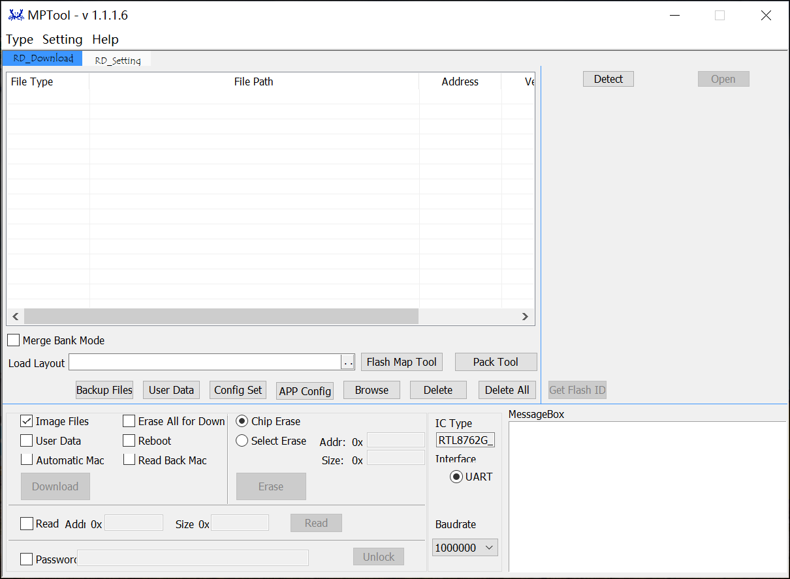
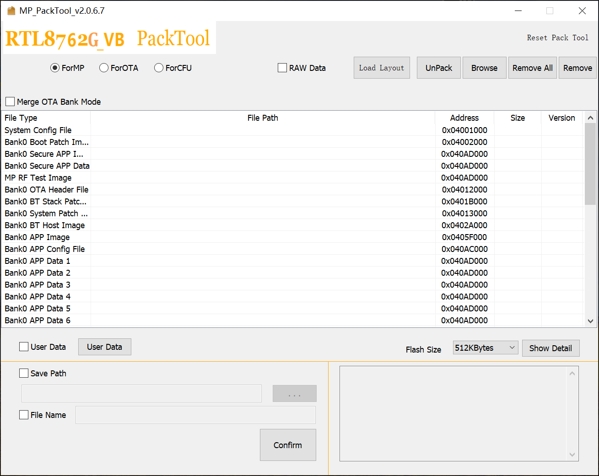
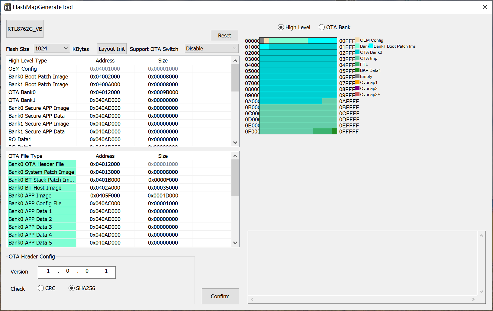
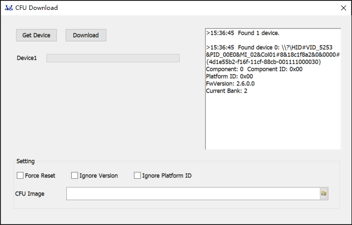
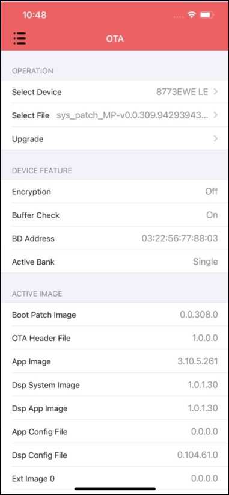
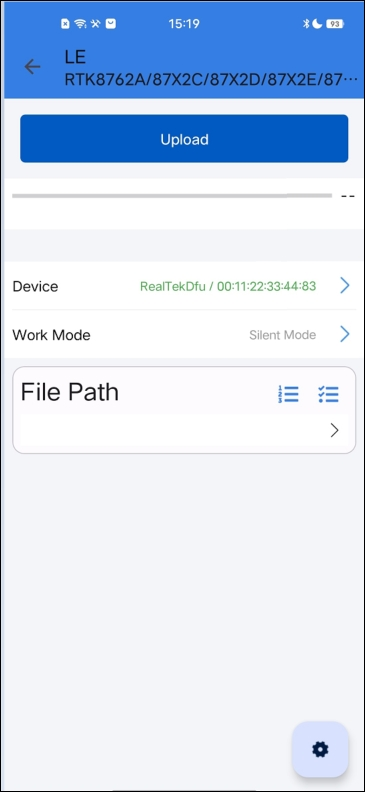

Tool Set
In addition to the intrinsic capabilities of our System on Chip (SoC), a comprehensive set of tools has been developed to facilitate extended feature development, user application creation, and large-scale production processes. This document offers a concise overview of these tools.
Here is a summary of the tools described:
File Name |
Description |
Path |
|---|---|---|
Used for R&D debugging or mass production. |
|
|
Commond-line version of MP Tool, which used for R&D debugging or mass production. |
|
|
Used to merge image files and generate data packet files for MP, OTA, CFU. |
|
|
Used to generate |
|
|
Used for Bluetooth, Zigbee, and other RF performance testing and certification testing such as FCC, BQB, CE, SRRC, KC. |
||
Used for system log analysis and debugging. |
|
|
Used for firmware upgrades via USB. |
||
Used for OTA upgrades via iOS. |
||
Used for OTA upgrades via Android. |
MP Tool
The MP Tool is a utility designed to support both mass production and debug modes.
Debug Mode: Offers developers a platform for debugging and feature development, with the main features including:
Download image
Setup APP Config and System Config File
Erase flash
Readback flash
MP Mode: Provides an array of capabilities, including the ability to program up to 8 devices concurrently and modify the device's Bluetooth address.
The MP Tool is integrated with Pack and Flash Map Generate functionalities. For detailed instructions on utilizing these features, refer to the user guide located in each tool's directory.
Please visit the RealMCU website to download MP Tool and consult the provided documentation.
{kind=link}

MP Tool Main Interface
MPCli
MPCli is the command-line version of the MP Tool, which can be used on Windows, Linux, and MacOS systems. The main features of MPCli include:
Download image
Modify MAC, calibrate XTAL Internal Cap, adjust TX Power
Readback EUID and MAC
Erase flash
Download eFuse
Please visit the RealMCU website to download MPCli and consult the provided documentation.
MP Pack Tool
The MP Pack Tool serves to amalgamate sub-images and generate a consolidated packet file for operations such as mass production (MP), over-the-air updates (OTA), or component firmware updates (CFU).
Please visit the RealMCU website to download MP Pack Tool and consult the provided documentation.
{kind=link}

MP Pack Tool Main Interface
Flash Map Generate Tool
The Flash Map Generate Tool offers two essential functions:
Generation of
flashmap.handflashmap.inifiles.Creation of header required for OTA updates.
Flash Map Generate Tool and its documentation are integrated into the MP Tool kits, Please visit the RealMCU website to download and consult the provided documentation.
{kind=link}

Flash Map Generate Tool Main Interface
RF Test Tool
The RF Test Tool offers a suite of capabilities:
Support RF performance testing of technologies such as Bluetooth and Zigbee.
Support certification testing for various regulatory standards including FCC/BQB/CE/SRRC/KC.
Please visit the RealMCU website to download RF Test Tool and consult the provided documentation.

RF Test Tool Main Interface
Debug Analyzer Tool
The Debug Analyzer Tool enables engineers to capture and decode system logs across various transport layers, enhancing the debugging process. Key features of this tool include:
Support for multiple input methods:
Binary files
Capabilities for log saving and parsing.
Generation of Bluetooth snoop logs for in-depth analysis with the Frontline capture tool.
Support for Ellisys injection.
Please visit the RealMCU website to download Debug Analyzer Tool and consult the provided documentation.

Debug Analyzer Tool Main Interface
CFU Download Tool
Used for upgrading the firmware of Realtek chips that comply with the CFU protocol.
Please visit the RealMCU website to download CFU Download Tool and consult the provided documentation.
{kind=link}

CFU Download Tool Main Interface
iOS OTA APP
Used for upgrading the firmware of Realtek chips via iOS.
Please visit the RealMCU website to download iOS OTA APP and consult the provided documentation.
{kind=link}

iOS OTA APP Main Interface
Android OTA APP
Used for upgrading the firmware of Realtek chips via Android.
Please visit the RealMCU website to download Android OTA APP and consult the provided documentation.
{kind=link}

Android OTA APP Main Interface